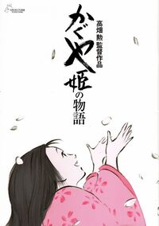

Spirited Away

Princess Kaguya

Directed by Hayao Miyazaki
When you need a friend, Totoro is waiting! Two young girls, Satsuki and Mei, have moved with their father into a new home in the country, while their mother recovers from illness in a nearby hospital. To their surprise, they soon discover that they share this home with some rather unusual creatures and even stranger neighbours - forest guardians that the girls dub Totoro. When trouble occurs, their new friends will help them rediscover hope.
Hayao Miyazaki’s Academy Award®-winning masterpiece returns to cinemas for a limited time in celebration of its 20th Anniversary. Chihiro thinks she is on another boring trip with her parents. But when they stop at a village that is not all that it seems, her parents undergo a mysterious transformation, and Chihiro is whisked into a world of fantastic spirits, shape-shifting dragons and a witch who never wants to see her leave. She must call on the courage she never knew she had to free herself and return her family to the outside world. The second biggest box office hit of all time in Japan, Spirited Away helped redefine the possibilities of animation for Western audiences and a generation of new filmmakers. Combining Japanese mythology with Alice in Wonderland-type whimsy, Spirited Away cemented Miyazaki’s reputation as an icon of animation and storytelling.
Isao Takahata's retelling of the oldest recorded Japanese narrative is a visionary tour de force." - VARIETY Found inside a shining stalk of bamboo, a tiny girl grows into an exquisite young lady, raised by an old bamboo cutter and his wife. From the countryside to the grand capital city, even unseen she enthralls all who encounter her, including five noble suitors. Ultimately she must face her fate, punishment for her crime.
Hayao Miyazaki's final masterpiece! Jiro dreams of flying and designing beautiful airplanes, inspired by the famous Italian aeronautical designer Caproni. Nearsighted and unable to be a pilot, he becomes one of the world's most accomplished airplane designers, experiencing key historical events in an epic tale of love, perseverance and the challenges of living and making choices in a turbulent world.